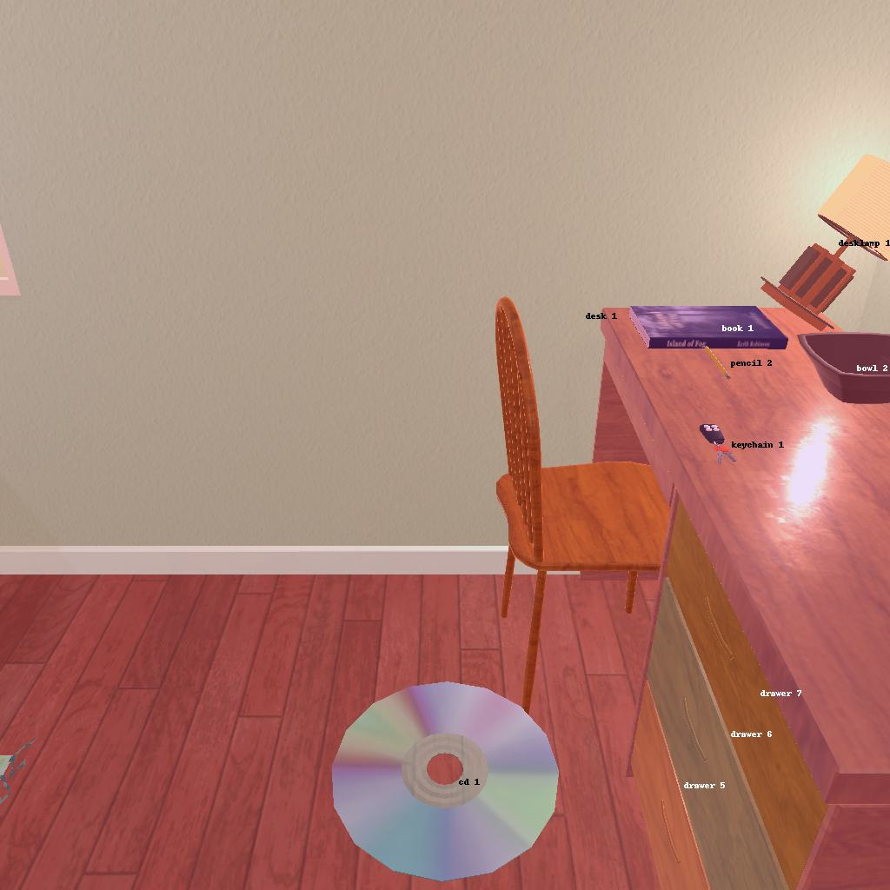

---------------------------------------------------------task: 6---------------------------------------------------------
--------------------------------------------------------------------------------------------------------------------------------------------------------------------
--------------------------------------------------------------------------------------------------------------------------------------------------------------------
Step:--------------------------------------------------------------------------8-------------------------------------------------------------------------------
----------------------------------------
VLM Prompt:
Image1:
Image2:
**Instruction**
1. Analyze the provided image to identify all visible household objects, focusing on those relevant to the task description "put some cd on safe."
2. Use the analysis of the image and the task hint "The agent must find an object of the desired type, pick it up, find the correct location to place it, and put it down there." to answer the question: what is the most reasonable action in the choices for the task description "put some cd on safe"?
4. Decide and write the answer using the template: The answer is: (i): , where i is the real number. If there is no desired object in the image, search every place based on **Initial Observation** to find the object. And if no one is exactly correct, choose a similar answer.
**Initial Observation**
You are in the middle of a room. Looking quickly around you, you can see bed (1-2), dresser (1), sidetable (1-2), drawer (1-11), desk (1), garbagecan (1), safe (1)
**Answer Choices**
(1): go to bed 1
(2): go to dresser 1
(3): go to bed 2
(4): go to sidetable 1
(5): go to drawer 1
(6): go to drawer 2
(7): go to sidetable 2
(8): go to drawer 3
(9): go to drawer 4
(10): go to desk 1
(11): go to garbagecan 1
(12): go to drawer 5
(13): go to drawer 7
(14): go to drawer 8
(15): go to drawer 9
(16): go to drawer 10
(17): go to drawer 11
(18): go to safe 1
(19): open drawer 6
(20): close drawer 6
(21): put cd 1 in/on drawer 6
(22): examine cd 1
(23): examine drawer 6
**Answer**
Let's think step by step by following the instructions.
----------------------------------------
----------------------------------------
Original Response:
First, we need to identify all visible household objects relevant to the task "put some cd on safe." In Image 1, we can see a cd labeled "cd 1" on the floor near the dresser, and a safe labeled "safe 1" on top of the dresser. In Image 2, we see the same cd "cd 1" on the floor near the desk, but the safe is not visible from this angle.
The task hint suggests that the agent needs to find the object of the desired type, which in this case is a cd. The cd is already identified as "cd 1" in both images. The next step is to find the correct location to place it, which is the safe labeled "safe 1" visible in Image 1.
Based on the Initial Observation, we know that the safe is located on dresser 1. Therefore, the most reasonable action would be to go to the cd, pick it up, and then go to the safe to place it there.
Since the answer choices do not include actions like picking up the cd or placing it on the safe, we must choose the closest action to begin the task. The answer that aligns with this is:
The answer is: (2): go to dresser 1
----------------------------------------
----------------------------------------
>>> Refine Original VLM Response and Get Pure Action: go to dresser 1
----------------------------------------
-----------------------------------------------------------------
Running time: 12.548288822174072 seconds
Total Money: 2.6272400000000005
-----------------------------------------------------------------
-----------------------------------------------------------------
Text Observation:You arrive at loc 1. On the dresser 1, you see a bowl 1, a mug 1, and a pen 1.
-----------------------------------------------------------------
UNSUCCEED